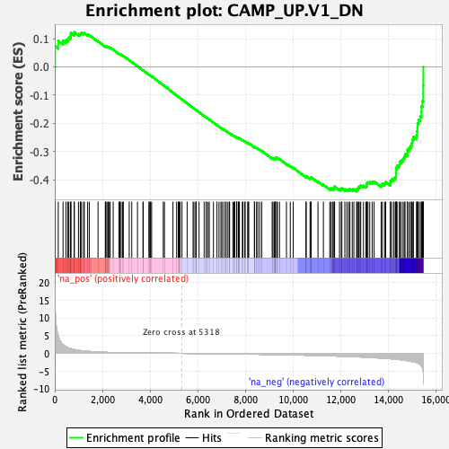

| | | Dataset | DE_genes |
| Phenotype | NoPhenotypeAvailable |
| Upregulated in class | na_neg |
| GeneSet | CAMP_UP.V1_DN |
| Enrichment Score (ES) | -0.44130433 |
| Normalized Enrichment Score (NES) | -1.4297316 |
| Nominal p-value | 0.005610098 |
| FDR q-value | 0.15485339 |
| FWER p-Value | 0.775 |
Table: GSEA Results Summary

Fig 1: Enrichment plot: CAMP_UP.V1_DN
Profile of the Running ES Score & Positions of GeneSet Members on the Rank Ordered List
| PROBE | GENE SYMBOL | GENE_TITLE | RANK IN GENE LIST | RANK METRIC SCORE | RUNNING ES | CORE ENRICHMENT | | 1 | PLEK | | | 12 | 13.584 | 0.0735 | No |
| 2 | RGS18 | | | 147 | 4.970 | 0.0919 | No |
| 3 | PELI1 | | | 348 | 2.456 | 0.0923 | No |
| 4 | PTPRC | | | 469 | 1.858 | 0.0946 | No |
| 5 | NCF2 | | | 548 | 1.590 | 0.0982 | No |
| 6 | MBD2 | | | 591 | 1.484 | 0.1036 | No |
| 7 | PRDM8 | | | 662 | 1.354 | 0.1064 | No |
| 8 | HSPA1A | | | 670 | 1.333 | 0.1132 | No |
| 9 | IQCK | | | 678 | 1.320 | 0.1200 | No |
| 10 | TMEM97 | | | 816 | 1.085 | 0.1170 | No |
| 11 | MIR155HG | | | 819 | 1.082 | 0.1227 | No |
| 12 | GNAQ | | | 995 | 0.865 | 0.1160 | No |
| 13 | BCL2L13 | | | 1071 | 0.778 | 0.1154 | No |
| 14 | MS4A6A | | | 1084 | 0.767 | 0.1188 | No |
| 15 | LMBR1 | | | 1126 | 0.737 | 0.1201 | No |
| 16 | DYNLL1 | | | 1214 | 0.670 | 0.1181 | No |
| 17 | CHST15 | | | 1239 | 0.651 | 0.1201 | No |
| 18 | DDAH1 | | | 1379 | 0.573 | 0.1141 | No |
| 19 | SLC15A2 | | | 1448 | 0.544 | 0.1127 | No |
| 20 | NFKB1 | | | 1815 | 0.385 | 0.0908 | No |
| 21 | PRDM1 | | | 2120 | 0.292 | 0.0725 | No |
| 22 | PTBP3 | | | 2134 | 0.285 | 0.0732 | No |
| 23 | RNF138 | | | 2152 | 0.280 | 0.0737 | No |
| 24 | MAL2 | | | 2220 | 0.262 | 0.0707 | No |
| 25 | ARHGAP5 | | | 2241 | 0.258 | 0.0708 | No |
| 26 | ATP2B1 | | | 2291 | 0.245 | 0.0690 | No |
| 27 | UBE2E2 | | | 2325 | 0.239 | 0.0681 | No |
| 28 | SNN | | | 2452 | 0.216 | 0.0610 | No |
| 29 | RALGAPA1 | | | 2689 | 0.177 | 0.0466 | No |
| 30 | SVEP1 | | | 2727 | 0.174 | 0.0451 | No |
| 31 | ATL1 | | | 2736 | 0.171 | 0.0455 | No |
| 32 | RWDD2B | | | 2786 | 0.164 | 0.0432 | No |
| 33 | ATP8A1 | | | 2849 | 0.156 | 0.0400 | No |
| 34 | RAB31 | | | 2878 | 0.152 | 0.0390 | No |
| 35 | CALM1 | | | 3125 | 0.128 | 0.0236 | No |
| 36 | MED4 | | | 3231 | 0.120 | 0.0174 | No |
| 37 | EIF4B | | | 3471 | 0.101 | 0.0023 | No |
| 38 | UBE2QL1 | | | 3701 | 0.087 | -0.0122 | No |
| 39 | ERC2 | | | 3715 | 0.087 | -0.0126 | No |
| 40 | MAP2 | | | 3949 | 0.073 | -0.0274 | No |
| 41 | PAK3 | | | 3990 | 0.070 | -0.0297 | No |
| 42 | SEL1L3 | | | 3999 | 0.070 | -0.0298 | No |
| 43 | PAEP | | | 4023 | 0.068 | -0.0309 | No |
| 44 | RGS1 | | | 4066 | 0.066 | -0.0333 | No |
| 45 | SNRPA | | | 4554 | 0.039 | -0.0650 | No |
| 46 | CAMK2D | | | 4603 | 0.036 | -0.0679 | No |
| 47 | BSN | | | 4960 | 0.018 | -0.0911 | No |
| 48 | HSP90AA1 | | | 5114 | 0.010 | -0.1010 | No |
| 49 | UNC79 | | | 5183 | 0.007 | -0.1055 | No |
| 50 | DGCR5 | | | 5207 | 0.006 | -0.1069 | No |
| 51 | AK5 | | | 5212 | 0.006 | -0.1072 | No |
| 52 | SRRM1 | | | 5261 | 0.003 | -0.1103 | No |
| 53 | SLC13A4 | | | 5339 | -0.001 | -0.1153 | No |
| 54 | PCLO | | | 5555 | -0.012 | -0.1293 | No |
| 55 | MAP4K4 | | | 5804 | -0.026 | -0.1454 | No |
| 56 | NAP1L2 | | | 5841 | -0.029 | -0.1476 | No |
| 57 | MYO5B | | | 5917 | -0.034 | -0.1523 | No |
| 58 | TMSB4X | | | 5931 | -0.034 | -0.1530 | No |
| 59 | ZFP36 | | | 5936 | -0.035 | -0.1531 | No |
| 60 | LTA | | | 6056 | -0.043 | -0.1606 | No |
| 61 | SLC17A7 | | | 6269 | -0.057 | -0.1742 | No |
| 62 | NUDT11 | | | 6353 | -0.062 | -0.1793 | No |
| 63 | BIRC3 | | | 6358 | -0.062 | -0.1792 | No |
| 64 | EPB41L3 | | | 6430 | -0.067 | -0.1834 | No |
| 65 | ATP9A | | | 6486 | -0.072 | -0.1867 | No |
| 66 | SLC2A3 | | | 6660 | -0.085 | -0.1975 | No |
| 67 | BZW1 | | | 6807 | -0.096 | -0.2065 | No |
| 68 | MFN1 | | | 6892 | -0.102 | -0.2115 | No |
| 69 | GLO1 | | | 6974 | -0.108 | -0.2162 | No |
| 70 | IL7R | | | 7020 | -0.112 | -0.2185 | No |
| 71 | GNG12 | | | 7099 | -0.118 | -0.2230 | No |
| 72 | TTYH3 | | | 7176 | -0.125 | -0.2273 | No |
| 73 | TMEM98 | | | 7190 | -0.126 | -0.2274 | No |
| 74 | BACE1 | | | 7266 | -0.133 | -0.2316 | No |
| 75 | CELF2 | | | 7325 | -0.138 | -0.2346 | No |
| 76 | FSTL1 | | | 7338 | -0.140 | -0.2347 | No |
| 77 | NAP1L1 | | | 7475 | -0.150 | -0.2427 | No |
| 78 | NPEPPS | | | 7523 | -0.154 | -0.2450 | No |
| 79 | USP38 | | | 7556 | -0.157 | -0.2462 | No |
| 80 | HINT1 | | | 7631 | -0.164 | -0.2501 | No |
| 81 | STXBP1 | | | 7635 | -0.164 | -0.2494 | No |
| 82 | SPOCK2 | | | 7699 | -0.171 | -0.2526 | No |
| 83 | IDS | | | 7707 | -0.171 | -0.2521 | No |
| 84 | RAP2A | | | 7727 | -0.173 | -0.2524 | No |
| 85 | CCND2 | | | 7751 | -0.175 | -0.2530 | No |
| 86 | CAPN12 | | | 7873 | -0.186 | -0.2599 | No |
| 87 | TLN2 | | | 7896 | -0.189 | -0.2603 | No |
| 88 | TSPAN5 | | | 7975 | -0.196 | -0.2643 | No |
| 89 | TIMP2 | | | 7990 | -0.197 | -0.2642 | No |
| 90 | KCNN4 | | | 8096 | -0.208 | -0.2699 | No |
| 91 | ME1 | | | 8132 | -0.212 | -0.2710 | No |
| 92 | SMARCC1 | | | 8135 | -0.212 | -0.2700 | No |
| 93 | MPZL3 | | | 8379 | -0.237 | -0.2846 | No |
| 94 | ARHGEF12 | | | 8382 | -0.238 | -0.2834 | No |
| 95 | TRPC1 | | | 8468 | -0.248 | -0.2876 | No |
| 96 | UBTD2 | | | 8523 | -0.253 | -0.2898 | No |
| 97 | P2RY10 | | | 8604 | -0.263 | -0.2936 | No |
| 98 | SRSF2 | | | 8689 | -0.273 | -0.2976 | No |
| 99 | TARBP1 | | | 9124 | -0.326 | -0.3242 | No |
| 100 | PLS3 | | | 9159 | -0.330 | -0.3246 | No |
| 101 | MTMR9 | | | 9219 | -0.337 | -0.3266 | No |
| 102 | JARID2 | | | 9249 | -0.341 | -0.3267 | No |
| 103 | THSD7A | | | 9254 | -0.342 | -0.3251 | No |
| 104 | DNAJA1 | | | 9258 | -0.342 | -0.3234 | No |
| 105 | CD160 | | | 9263 | -0.343 | -0.3218 | No |
| 106 | TUBB2B | | | 9331 | -0.350 | -0.3242 | No |
| 107 | CHST2 | | | 9341 | -0.351 | -0.3229 | No |
| 108 | MYH10 | | | 9432 | -0.363 | -0.3268 | No |
| 109 | GLS | | | 9724 | -0.407 | -0.3436 | No |
| 110 | DEDD2 | | | 9884 | -0.430 | -0.3517 | No |
| 111 | HENMT1 | | | 10008 | -0.447 | -0.3573 | No |
| 112 | DCAF6 | | | 10544 | -0.527 | -0.3894 | No |
| 113 | OAT | | | 10552 | -0.529 | -0.3870 | No |
| 114 | CDCA7L | | | 10714 | -0.555 | -0.3945 | No |
| 115 | ETS2 | | | 10744 | -0.559 | -0.3933 | No |
| 116 | EIF4E | | | 10762 | -0.562 | -0.3913 | No |
| 117 | TUBB3 | | | 11047 | -0.605 | -0.4066 | No |
| 118 | PCYOX1L | | | 11274 | -0.652 | -0.4178 | No |
| 119 | SERINC1 | | | 11542 | -0.707 | -0.4314 | No |
| 120 | ANKRD6 | | | 11598 | -0.720 | -0.4311 | No |
| 121 | ZMIZ1 | | | 11658 | -0.734 | -0.4309 | No |
| 122 | PAM | | | 11716 | -0.744 | -0.4306 | No |
| 123 | RERE | | | 11734 | -0.748 | -0.4276 | No |
| 124 | ANXA1 | | | 11745 | -0.750 | -0.4242 | No |
| 125 | ATP2B4 | | | 11951 | -0.794 | -0.4332 | No |
| 126 | AKAP12 | | | 12025 | -0.810 | -0.4336 | No |
| 127 | BACH2 | | | 12049 | -0.815 | -0.4306 | No |
| 128 | FRY | | | 12174 | -0.849 | -0.4341 | No |
| 129 | DLG5 | | | 12257 | -0.867 | -0.4347 | No |
| 130 | FUT8 | | | 12331 | -0.886 | -0.4346 | No |
| 131 | INSIG1 | | | 12387 | -0.899 | -0.4333 | No |
| 132 | FAM189B | | | 12485 | -0.924 | -0.4346 | No |
| 133 | PALLD | | | 12552 | -0.942 | -0.4338 | No |
| 134 | RPL7 | | | 12668 | -0.972 | -0.4360 | Yes |
| 135 | IGFBP5 | | | 12691 | -0.979 | -0.4321 | Yes |
| 136 | KBTBD11 | | | 12737 | -0.993 | -0.4296 | Yes |
| 137 | MAPK1 | | | 12754 | -0.998 | -0.4252 | Yes |
| 138 | CLK1 | | | 12814 | -1.015 | -0.4235 | Yes |
| 139 | PTPRD | | | 12842 | -1.026 | -0.4196 | Yes |
| 140 | NDRG4 | | | 12957 | -1.062 | -0.4213 | Yes |
| 141 | TSC22D1 | | | 13060 | -1.094 | -0.4220 | Yes |
| 142 | ESYT1 | | | 13097 | -1.105 | -0.4183 | Yes |
| 143 | SYPL1 | | | 13098 | -1.105 | -0.4122 | Yes |
| 144 | TJP1 | | | 13145 | -1.119 | -0.4091 | Yes |
| 145 | BAG6 | | | 13220 | -1.145 | -0.4077 | Yes |
| 146 | UBTF | | | 13322 | -1.181 | -0.4078 | Yes |
| 147 | ACAT2 | | | 13403 | -1.215 | -0.4064 | Yes |
| 148 | AKT3 | | | 13698 | -1.329 | -0.4184 | Yes |
| 149 | CD83 | | | 13751 | -1.361 | -0.4144 | Yes |
| 150 | PFKFB4 | | | 13845 | -1.398 | -0.4128 | Yes |
| 151 | CASP7 | | | 13889 | -1.418 | -0.4078 | Yes |
| 152 | KLHDC4 | | | 14081 | -1.523 | -0.4120 | Yes |
| 153 | NYNRIN | | | 14084 | -1.524 | -0.4038 | Yes |
| 154 | ZCCHC14 | | | 14138 | -1.557 | -0.3988 | Yes |
| 155 | IL4R | | | 14224 | -1.614 | -0.3955 | Yes |
| 156 | DAG1 | | | 14290 | -1.654 | -0.3907 | Yes |
| 157 | PINK1 | | | 14322 | -1.672 | -0.3836 | Yes |
| 158 | SERPINB2 | | | 14324 | -1.672 | -0.3745 | Yes |
| 159 | PKIA | | | 14330 | -1.678 | -0.3657 | Yes |
| 160 | TANC2 | | | 14333 | -1.679 | -0.3566 | Yes |
| 161 | SYT11 | | | 14367 | -1.697 | -0.3495 | Yes |
| 162 | EZR | | | 14463 | -1.761 | -0.3461 | Yes |
| 163 | ID2 | | | 14476 | -1.770 | -0.3372 | Yes |
| 164 | FOXN3 | | | 14539 | -1.820 | -0.3313 | Yes |
| 165 | DPYSL3 | | | 14619 | -1.894 | -0.3261 | Yes |
| 166 | PES1 | | | 14669 | -1.936 | -0.3187 | Yes |
| 167 | GEM | | | 14702 | -1.971 | -0.3100 | Yes |
| 168 | HSPA8 | | | 14798 | -2.061 | -0.3049 | Yes |
| 169 | LRRFIP1 | | | 14802 | -2.063 | -0.2939 | Yes |
| 170 | ITSN1 | | | 14876 | -2.133 | -0.2870 | Yes |
| 171 | DST | | | 14934 | -2.207 | -0.2786 | Yes |
| 172 | ASAP2 | | | 14988 | -2.287 | -0.2696 | Yes |
| 173 | NFATC2 | | | 15009 | -2.319 | -0.2582 | Yes |
| 174 | RASD2 | | | 15053 | -2.389 | -0.2479 | Yes |
| 175 | MYO15B | | | 15184 | -2.610 | -0.2422 | Yes |
| 176 | ITPA | | | 15203 | -2.671 | -0.2287 | Yes |
| 177 | ABLIM1 | | | 15224 | -2.723 | -0.2151 | Yes |
| 178 | TMBIM1 | | | 15229 | -2.725 | -0.2005 | Yes |
| 179 | SH3PXD2A | | | 15266 | -2.829 | -0.1874 | Yes |
| 180 | NDRG1 | | | 15338 | -3.112 | -0.1750 | Yes |
| 181 | ENO2 | | | 15390 | -3.458 | -0.1594 | Yes |
| 182 | BCR | | | 15393 | -3.529 | -0.1403 | Yes |
| 183 | TUBA4A | | | 15432 | -3.985 | -0.1209 | Yes |
| 184 | PHLDB1 | | | 15464 | -5.068 | -0.0952 | Yes |
| 185 | TUBB4B | | | 15465 | -5.085 | -0.0674 | Yes |
| 186 | FOSB | | | 15469 | -5.930 | -0.0352 | Yes |
| 187 | RRAD | | | 15470 | -6.446 | 0.0001 | Yes |
Table: GSEA details [plain text format]
Fig 2: CAMP_UP.V1_DN: Random ES distribution
Gene set null distribution of ES for CAMP_UP.V1_DN